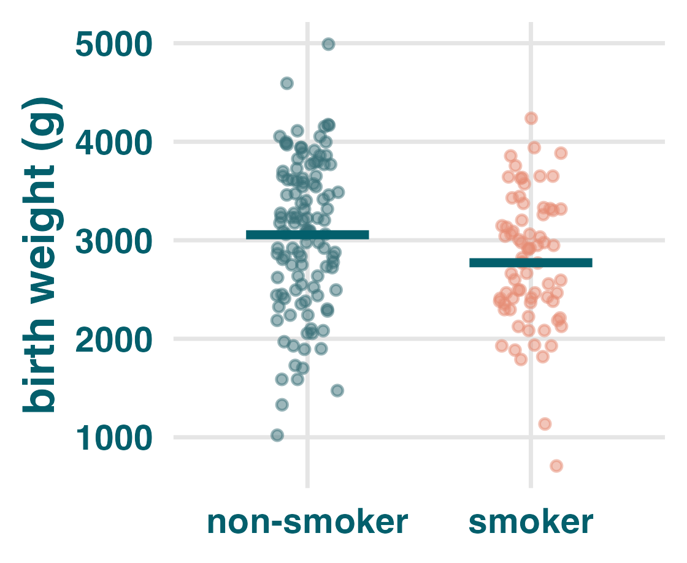
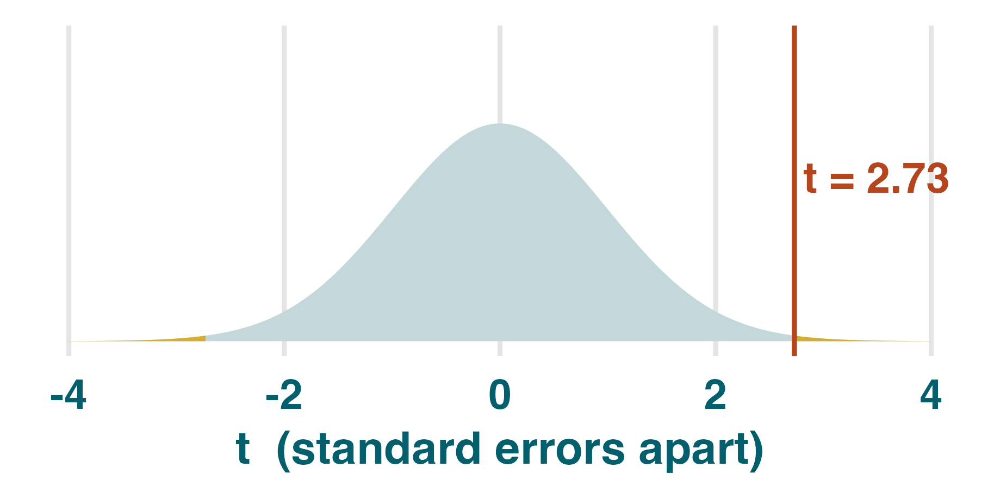
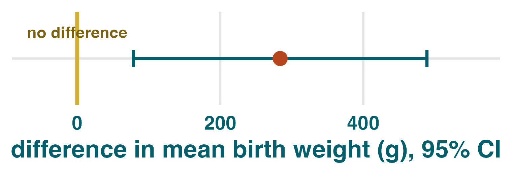

Intro to the two-sample t-test
library(dplyr)
data(birthwt, package = "MASS")
birthwt <- birthwt |>
mutate(smoke = factor(smoke,
labels = c("non-smoker", "smoker")))
birthwt |>
group_by(smoke) |>
summarise(mean_bwt = mean(bwt))
#> smoke mean_bwt
#> non-smoker 3056
#> smoker 2772
ggplot(birthwt, aes(smoke, bwt)) + geom_jitter(width = .14, alpha = .5) + stat_summary(fun = mean, geom = "crossbar")

$H_0:\ \mu_\text{non} = \mu_\text{smoke}$
the true group means are equal.
$H_1:\ \mu_\text{non} \ne \mu_\text{smoke}$
the true group means differ.
Comparing mean cholesterol in two separate groups (drug vs placebo), what is H0?B
- A. $\mu_\text{drug} < \mu_\text{placebo}$
- B. $\mu_\text{drug} = \mu_\text{placebo}$
- C. $\mu_\text{drug} \ne \mu_\text{placebo}$
You want to detect any birth-weight difference, up or down. Which H1?C
- A. $\mu_\text{non} > \mu_\text{smoke}$
- B. $\mu_\text{non} < \mu_\text{smoke}$
- C. $\mu_\text{non} \ne \mu_\text{smoke}$
For the same gap between means, the evidence is stronger when the within-group spread is ____ (smaller / larger) and the group sizes are ____ (larger / smaller).smaller · larger
s1 <- sd(filter(birthwt, smoke == "non-smoker")$bwt)
n1 <- sum(birthwt$smoke == "non-smoker")
s2 <- sd(filter(birthwt, smoke == "smoker")$bwt)
n2 <- sum(birthwt$smoke == "smoker")
#> s1 = 752.7, n1 = 115
#> s2 = 659.6, n2 = 74
se <- sqrt(s1^2/n1 + s2^2/n2)
#> 104.0
t <- 283.8 / se
#> t = 2.73

2 * pt(-abs(t),
df = 170)
#> 0.007
t.test(bwt ~ smoke, data = birthwt); t.test(birthwt$bwt ~ birthwt$smoke) # same Welch Two Sample t-test data: bwt by smoke t = 2.7299, df = 170.1, p-value = 0.007003 alternative hypothesis: true difference in means between group non-smoker and group smoker is not equal to 0 95 percent confidence interval: 78.57486 488.97860 sample estimates: mean in group non-smoker mean in group smoker 3055.696 2771.919 #> p < 0.05 -> reject H0
Confidence intervals, p-values, and reading a two-sample t-test

| p-value | 95% confidence interval | |
|---|---|---|
| Question | Is 0 plausible? | Which values are plausible? |
| Reject at .05 | $p < .05$ | CI excludes 0 |
| Report | $p = .007$ | mean diff = 284 g, 95% CI [79, 489] |
1. In a small clinic study, patients in a walking programme had mean resting heart rates 4 beats per minute lower than controls, with a 95% CI of [1, 7]. What decision matches at $\alpha = 0.05$?
- A. We fail to reject H0.
- B. We reject H0.
- C. We have proven H0 is false.
2. Reading two CI pictures: which interval gives stronger evidence of a difference?
- A. The interval that crosses 0 gives stronger evidence.
- B. The interval entirely above 0 gives stronger evidence.
- C. The two intervals give identical evidence.
3. Reading a paper: mean systolic blood pressure was 6 mmHg lower on a new drug, 95% CI [-1, 13], $p = .08$. What is the clean reading?
- A. The study gives clear evidence of a drug effect.
- B. The result is still compatible with no true mean difference.
- C. The study proves the drug has no effect.
4. Writing a manuscript: "mean difference = 284 g" without a CI is missing what?
- A. The sentence is missing precision around the estimate.
- B. The sentence is missing the group labels only.
- C. The sentence is missing the sample mean.
Answers 1-4
- 1. B. The confidence interval excludes 0, so we reject $H_0$ at .05.
- 2. B. An interval entirely above 0 means every plausible value is a positive difference.
- 3. B. The confidence interval includes 0 and $p > .05$, so the result is compatible with no true mean difference.
- 4. A. A confidence interval shows precision by showing how uncertain the 284 g estimate is.
datasets::ToothGrowth records tooth length in two separate supplement groups: 30 guinea pigs got orange juice (OJ), 30 got ascorbic acid (VC). This is not paired data.t.test(len ~ supp, data = ToothGrowth); t.test(ToothGrowth$len ~ ToothGrowth$supp) # same Welch Two Sample t-test data: len by supp t = 1.9153, df = 55.309, p-value = 0.06063 alternative hypothesis: true difference in means is not equal to 0 95 percent confidence interval: -0.171 7.571 sample estimates: mean in group OJ mean in group VC 20.66 16.96
1. What is the null hypothesis for comparing the two separate supplement groups?
- A. $\mu_\text{OJ} = \mu_\text{VC}$
- B. $\mu_\text{OJ} \ne \mu_\text{VC}$
2. According to the sample estimates, what is the mean tooth length in the OJ group?
- A. The OJ mean is 16.96.
- B. The OJ mean is 20.66.
- C. The OJ mean is 1.92.
3. Match each term to its value, then to its plain-English meaning. Some values are rounded.
tdfp-value4. At $\alpha = 0.05$, what decision should we make for the ToothGrowth test?
- A. We fail to reject H0 because $p = 0.061$.
- B. We reject H0.
- C. We have proven H0 is true.
Answers 1-4
- 1. A. The null says the two true supplement means are equal.
- 2. B. The sample estimates show OJ mean = 20.66.
- 4. A. $p = 0.061 > .05$, so fail to reject $H_0$.
| Term | Value | Meaning |
|---|---|---|
t | d. 1.92 | a. # of SEs apart |
df | a. 55.3 | b. adjusted df |
p-value | b. 0.061 | d. P(t this extreme | H0) |
| 95% CI | c. [-0.17, 7.57] | c. plausible range |